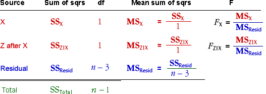
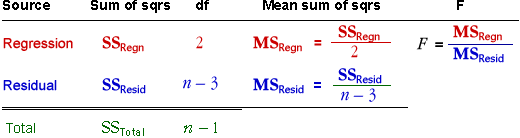
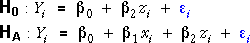
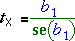

Anova table
The previous page showed that the total sum of squares can be split in two ways (corresponding to the two orders of adding the explanatory variables, X and Z). Each set of sums of squares can be presented in a sums of squares table that can be extended in the usual way with mean sums of squares and F-ratios to give an analysis of variance table.

There is another similar anova table corresponding to the other order of adding the explanatory variables.
Relationship to anova table for combined test of both X and Z
In an earlier section, an analysis of variance table was used for a combined test about whether X and Z were related to the response.

This anova table and the two sequential anova tables that separate out the effects of the two explanatory variables (in different orders) contain the same total and regression sums of squares. The main difference is that in the sequential anova,
The regression sum of squares (with 2 degrees of freedom) is split into two sums of squares that each have 1 degree of freedom.
F tests
In each of the two sequential anova tables, the final F ratio (FX|Z or FZ|X) can be used in an F test for whether the final variable added (X or Z) is important. For example, FX|Z is compared to the F distribution (1, n - 3) degrees of freedom to test the hypotheses

The p-value is the upper tail area of this F distribution.
F and t tests
We described earlier t-tests for hypotheses such as these. For example, the t-test for β1 corresponding to the hypotheses shown above is based on the test statistic,

Since the F and t tests are assessing the same hypotheses, it should come as no surprise that they result in the same p-value and conclusion. Indeed, theory can prove that FX|Z is equal to the square of tX .
Other F tests
The first line in each anova table also provides an F ratio (FX or FZ ) that can be used for a test. However these tests are rarely useful unless it has already been concluded (from FZ|X or FX|Z ) that the other variable is not needed.
Examples
The diagram below shows a few data sets involving correlated explanatory variables.
For each data set, examine the two anova tables — the pop-up menu Fitting order switches between them. From the highlighted p-values associated with (X after Z) and (Z after X), you can assess whether there is evidence against dropping the individual variables from the full model. Note that the F-ratios are the square of the t statistics that are used to test the same hypotheses.
(The top F ratios and their p-values are not examined unless the highlighted F ratio in the same table shows that the other variable can be dropped from the full model.)